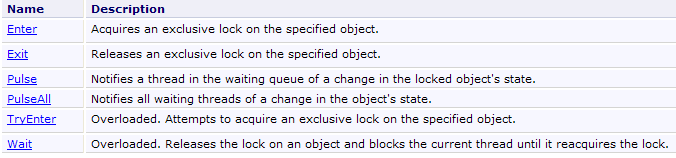
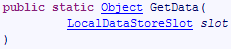

10. Os threads de execução
10.1. A classe Thread
Quando se inicia uma aplicação, esta é executada num fluxo de execução denominado «thread». A classe .NET que modela um thread é a classe System.Threading.Thread e tem a seguinte definição:
Construtores
 |
Nos exemplos que se seguem, utilizaremos apenas os construtores [1,3]. O construtor [1] aceita como parâmetro um método com a assinatura [2], c.a.d, que tem um parâmetro do tipo object e não devolve qualquer resultado. O construtor [3] aceita como parâmetro um método com a assinatura [4], c.a.d, que não tem parâmetros e não devolve qualquer resultado.
Propriedades
Algumas propriedades úteis:
- Thread CurrentThread: propriedade estática que fornece uma referência à thread na qual se encontra o código que solicitou esta propriedade
- string Name: o nome do thread
- bool IsAlive: indica se o thread está em execução ou não.
Métodos
Os métodos mais utilizados são os seguintes:
- Start(), Start(object obj): inicia a execução assíncrona do thread, podendo passar-lhe informações num tipo object.
- Abort(), Abort(object obj): para forçar o encerramento de um thread
- Join(): o thread T1 que executa T2.Join fica bloqueado até que o thread T2 termine. Existem variantes para encerrar a espera após um período de tempo determinado.
- Sleep(int n): método estático — o thread que executa o método é suspenso durante n milissegundos. Perde então o processador, que é atribuído a outro thread.
Vejamos uma primeira aplicação que destaca a existência de um thread principal de execução, aquele no qual é executada a função Main de uma classe:
using System;
using System.Threading;
namespace Chap8 {
class Program {
static void Main(string[] args) {
// inicialização do thread atual
Thread main = Thread.CurrentThread;
// exibição
Console.WriteLine("Thread courant : {0}", main.Name);
// alteração do nome
main.Name = "main";
// verificação
Console.WriteLine("Thread courant : {0}", main.Name);
// loop infinito
while (true) {
// exibição
Console.WriteLine("{0} : {1:hh:mm:ss}", main.Name, DateTime.Now);
// paragem temporária
Thread.Sleep(1000);
}//while
}
}
}
- linha 8: obtém-se uma referência à thread na qual o método [main] é executado
- linhas 10-14: exibe-se e altera-se o seu nome
- linhas 17-22: um ciclo que efetua uma exibição a cada segundo
- linha 21: o thread no qual o método [main] está a ser executado será suspenso durante 1 segundo
Os resultados no ecrã são os seguintes:
- linha 1: o thread atual não tinha nome
- linha 2: agora tem um
- linhas 3-7: a exibição que ocorre a cada segundo
- linha 8: o programa é interrompido com Ctrl-C.
10.2. Criação de threads de execução
É possível ter aplicações em que partes de código são executadas de forma «simultânea» em diferentes threads de execução. Quando se diz que os threads são executados simultaneamente, trata-se frequentemente de um uso incorreto do termo. Se a máquina tiver apenas um processador, como ainda é frequentemente o caso, os threads partilham esse processador: cada um dispõe dele, à vez, durante um breve instante (alguns milissegundos). É isso que dá a ilusão de paralelismo de execução. O tempo atribuído a um thread depende de vários fatores, incluindo a sua prioridade, que tem um valor por predefinição, mas que também pode ser definida por programação. Quando um thread dispõe do processador, utiliza-o normalmente durante todo o tempo que lhe foi atribuído. No entanto, pode libertá-lo antes do tempo:
- entrando em espera por um evento (Wait, Join)
- entrando em suspensão durante um período determinado (Sleep)
- Um thread T é, em primeiro lugar, criado por um dos construtores apresentados acima, por exemplo:
onde Start é um método com uma das duas assinaturas seguintes:
A criação de um thread não o inicia.
- A execução do thread T é iniciada por T.Start(): o método Start passado ao construtor de T será então executado pelo thread T. O programa que executa a instrução T.Start() não aguarda o fim da tarefa T: passa imediatamente para a instrução seguinte. Temos, assim, duas tarefas a serem executadas em paralelo. Muitas vezes, estas têm de poder comunicar entre si para saber em que ponto se encontra o trabalho comum a realizar. Este é o problema da sincronização das threads.
- Uma vez iniciado, o thread T executa-se de forma autónoma. Parará quando o método Start que está a executar tiver concluído o seu trabalho.
- É possível forçar o thread T a terminar:
- T.Abort() solicita que o thread T termine.
- Também é possível aguardar o fim da sua execução através de T.Join(). Trata-se de uma instrução bloqueante: o programa que a executa fica bloqueado até que a tarefa T tenha concluído o seu trabalho. É uma forma de sincronização.
Analisemos o seguinte programa:
using System;
using System.Threading;
namespace Chap8 {
class Program {
public static void Main() {
// inicialização do thread atual
Thread main = Thread.CurrentThread;
// atribuir um nome à thread
main.Name = "Main";
// criação de threads de execução
Thread[] tâches = new Thread[5];
for (int i = 0; i < tâches.Length; i++) {
// criação do thread i
tâches[i] = new Thread(Affiche);
// define-se o nome do thread
tâches[i].Name = i.ToString();
// inicia-se a execução do thread i
tâches[i].Start();
}
// fim da rotina
Console.WriteLine("Fin du thread {0} à {1:hh:mm:ss}",main.Name,DateTime.Now);
}
public static void Affiche() {
// exibição do início da execução
Console.WriteLine("Début d'exécution de la méthode Affiche dans le Thread {0} : {1:hh:mm:ss}",Thread.CurrentThread.Name,DateTime.Now);
// suspensão durante 1 s
Thread.Sleep(1000);
// exibição do fim da execução
Console.WriteLine("Fin d'exécution de la méthode Affiche dans le Thread {0} : {1:hh:mm:ss}", Thread.CurrentThread.Name, DateTime.Now);
}
}
}
- linhas 8-10: atribui-se um nome ao thread que executa o método [Main]
- linhas 13-21: criam-se 5 threads e executam-se. As referências das threads são armazenadas numa matriz para que possam ser recuperadas posteriormente. Cada thread executa o método Affiche das linhas 27-35.
- linha 20: o thread n.º i é iniciado. Esta operação é não bloqueante. O thread n.º i será executado em paralelo com o thread do método [Main] que o iniciou.
- linha 24: o thread que executa o método [Main] termina.
- linhas 27-35: o método [Affiche] efetua exibições. Exibe o nome do thread que o executa, bem como as horas de início e fim da execução.
- linha 31: qualquer thread que esteja a executar o método [Affiche] irá parar durante 1 segundo. O processador será então atribuído a outro thread em espera pelo processador. No final do segundo de paragem, o thread que esteve parado passará a ser candidato ao processador. Receberá o processador quando chegar a sua vez. Isso depende de vários fatores, incluindo a prioridade dos outros threads em espera pelo processador.
Os resultados são os seguintes:
Estes resultados são muito esclarecedores:
- vemos, em primeiro lugar, que o início da execução de um thread não é bloqueante. O método Main iniciou a execução de 5 threads em paralelo e terminou a sua execução antes deles. A operação
inicia a execução do thread «tâches[i]», mas, feito isso, a execução prossegue imediatamente com a instrução seguinte, sem aguardar o fim da execução do thread.
- Todos os threads criados devem executar o método Affiche. A ordem de execução é imprevisível. Mesmo que, no exemplo, a ordem de execução pareça seguir a ordem dos pedidos de execução, não se podem tirar conclusões gerais. O sistema operativo tem, neste caso, 6 threads e um processador. Irá distribuir o processador por estas 6 threads de acordo com regras próprias.
- Nos resultados, observa-se uma consequência do método Sleep. No exemplo, é o thread 0 que executa em primeiro lugar o método Affiche. A mensagem de início de execução é apresentada e, em seguida, o método Sleep é executado, o que o suspende durante 1 segundo. Perde então o processador, que fica assim disponível para outro thread. O exemplo mostra que é o thread 1 que o irá obter. A thread 1 seguirá o mesmo percurso, tal como as outras threads. Quando o segundo de suspensão da thread 0 terminar, a sua execução poderá recomeçar. O sistema atribui-lhe o processador e ela pode concluir a execução do método Affiche.
Alteremos o nosso programa para terminar o método Main com as instruções:
// fim da rotina
Console.WriteLine("Fin du thread " + main.Name);
// param-se todos os threads
Environment.Exit(0);
A execução do novo programa produz os seguintes resultados:
- linhas 1-5: os threads criados pela função Main iniciam a sua execução e são interrompidos durante 1 segundo
- linha 6: o thread [Main] recupera o processador e executa a instrução:
Esta instrução interrompe todos os threads da aplicação e não apenas o thread Main.
Se o método Main quiser aguardar o fim da execução dos threads que criou, pode utilizar o método Join da classe Thread:
public static void Main() {
...
// aguarda todos os threads
for (int i = 0; i < tâches.Length; i++) {
// aguarda o fim da execução do thread i
tâches[i].Join();
}
// fim da rotina principal
Console.WriteLine("Fin du thread {0} à {1:hh:mm:ss}", main.Name, DateTime.Now);
}
- linha 6: o thread [Main] aguarda cada um dos threads. Primeiro fica bloqueado à espera do thread n.º 1, depois do thread n.º 2, etc... Por fim, quando sai do ciclo das linhas 2-5, significa que os 5 threads que lançou terminaram.
Obtêm-se então os seguintes resultados:
- linha 11: o thread [Main] terminou após os threads que tinha iniciado.
10.3. Importância dos threads
Agora que destacámos a existência de um thread por predefinição — aquele que executa o método Main — e que sabemos como criar outros, vamos debruçar-nos sobre a utilidade dos threads para nós e sobre as razões pelas quais os apresentamos aqui. Existe um tipo de aplicações que se presta bem à utilização de threads: as aplicações cliente-servidor da Internet. Iremos apresentá-las no capítulo seguinte. Numa aplicação cliente-servidor da Internet, um servidor localizado numa máquina S1 responde aos pedidos de clientes localizados em máquinas remotas C1, C2, ..., Cn.
 |
Utilizamos diariamente aplicações da Internet que seguem este esquema: serviços Web, correio eletrónico, consulta de fóruns, transferência de ficheiros... No esquema acima, o servidor S1 deve servir os clientes Ci de forma simultânea. Se tomarmos o exemplo de um servidor FTP (File Transfer Protocol) que fornece ficheiros aos seus clientes, sabemos que uma transferência de ficheiros pode, por vezes, demorar vários minutos. É claro que está fora de questão que um cliente monopolize sozinho o servidor durante esse período de tempo. O que se faz habitualmente é o servidor criar tantos threads de execução quantos forem os clientes. Cada thread fica então encarregado de atender a um cliente específico. Como o processador é partilhado ciclicamente entre todos os threads ativos da máquina, o servidor dedica algum tempo a cada cliente, garantindo assim a simultaneidade do serviço.
 |
Na prática, o servidor utiliza um conjunto de threads com um número limitado de threads, por exemplo, 50. O 51.º cliente é, então, convidado a aguardar.
10.4. Troca de informações entre threads
Nos exemplos anteriores, um thread era inicializado da seguinte forma:
onde Run era um método com a seguinte assinatura:
Também é possível utilizar a seguinte assinatura:
Isto permite transmitir informação ao thread iniciado. Assim,
irá iniciar o thread t, que, por sua vez, executará o método Run que lhe foi associado por definição, passando-lhe o parâmetro efetivo obj1. Eis um exemplo:
using System;
using System.Threading;
namespace Chap8 {
class Program4 {
public static void Main() {
// inicialização do thread atual
Thread main = Thread.CurrentThread;
// atribui-se um nome ao thread
main.Name = "Main";
// Criação de threads de execução
Thread[] tâches = new Thread[5];
Data[] data = new Data[5];
for (int i = 0; i < tâches.Length; i++) {
// criação do thread i
tâches[i] = new Thread(Sleep);
// define-se o nome do thread
tâches[i].Name = i.ToString();
// inicia-se a execução do thread i
tâches[i].Start(data[i] = new Data { Début = DateTime.Now, Durée = i+1 });
}
// aguarda-se a conclusão de todos os threads
for (int i = 0; i < tâches.Length; i++) {
// aguarda o fim da execução do thread i
tâches[i].Join();
// exibição do resultado
Console.WriteLine("Thread {0} terminé : début {1:hh:mm:ss}, durée programmée {2} s, fin {3:hh:mm:ss}, durée effective {4}",
tâches[i].Name,data[i].Début,data[i].Durée,data[i].Fin,(data[i].Fin-data[i].Début));
}
// fim da rotina
Console.WriteLine("Fin du thread {0} à {1:hh:mm:ss}", main.Name, DateTime.Now);
}
public static void Sleep(object infos) {
// recuperação do parâmetro
Data data = (Data)infos;
// suspensão durante Duration segundos
Thread.Sleep(data.Durée*1000);
// fim da execução
data.Fin = DateTime.Now;
}
}
internal class Data {
// informações diversas
public DateTime Début { get; set; }
public int Durée { get; set; }
public DateTime Fin { get; set; }
}
}
- linhas 45-50: a informação do tipo [Data] passada aos threads:
- Début: hora do início da execução do thread — definida pelo thread iniciador
- Durée: duração, em segundos, do Sleep executado pela thread lançada — definida pela thread lançadora
- Fin: hora de início da execução do thread — definida pelo thread lançador
- linhas 35-43: o método Sleep executado pelos threads tem a assinatura void Sleep(object obj). O parâmetro efetivo obj será do tipo [Data], definido na linha 45.
- linhas 15-22: criação de 5 threads
- linha 17: cada thread é associado ao método Sleep da linha 35
- linha 21: um objeto do tipo [Data] é passado para o método Start, que inicia o thread. Neste objeto, foi registada a hora de início da execução do thread, bem como a duração, em segundos, durante a qual este deve permanecer inativo. Este objeto é armazenado na tabela da linha 14.
- linhas 24-30: o thread [Main] aguarda a conclusão de todos os threads que iniciou.
- linhas 28-29: o thread [Main] recupera o objeto data[i] do thread n.º i e exibe o seu conteúdo.
- linhas 35-42: o método Sleep executado pelos threads
- linha 37: recupera-se o parâmetro do tipo [Data]
- linha 39: o campo Durée do parâmetro é utilizado para definir a duração do Sleep
- linha 41: o campo Fin do parâmetro é inicializado
Os resultados da execução são os seguintes:
Este exemplo mostra que dois threads podem trocar informações:
- o thread iniciador pode controlar a execução do thread iniciado, fornecendo-lhe informações
- o thread lançado pode devolver resultados ao thread lançador.
Para que o thread lançado saiba quando os resultados que aguarda estão disponíveis, é necessário que seja notificado do fim do thread lançado. Neste caso, aguardou que este terminasse utilizando o método Join. Existem outras formas de fazer o mesmo. Veremos isso mais adiante.
10.5. Acesso simultâneo a recursos partilhados
10.5.1. Acesso simultâneo não sincronizado
No parágrafo sobre a troca de informações entre threads, a informação trocada era apenas entre duas threads e em momentos bem específicos. Tratava-se de uma clássica passagem de parâmetros. Existem outros casos em que uma informação é partilhada por várias threads que podem querer lê-la ou atualizá-la ao mesmo tempo. Coloca-se então o problema da integridade dessa informação. Suponhamos que a informação partilhada seja uma estrutura S com várias informações I1, I2, ... In.
- Um thread T1 começa a atualizar a estrutura S: altera o campo I1 e é interrompido antes de ter concluído a atualização completa da estrutura S
- um thread T2, que recupera o processador, lê então a estrutura S para tomar decisões. Ele lê uma estrutura num estado instável: alguns campos estão atualizados, outros não.
Chama-se a esta situação «acesso a um recurso partilhado», neste caso a estrutura S, e é frequentemente bastante delicada de gerir. Vejamos o exemplo seguinte para ilustrar os problemas que podem surgir:
- uma aplicação vai gerar n threads, sendo que n é passado como parâmetro
- o recurso partilhado é um contador que deverá ser incrementado por cada thread gerado
- no final da aplicação, o valor do contador é exibido. Deveríamos, portanto, encontrar n.
O programa é o seguinte:
using System;
using System.Threading;
namespace Chap8 {
class Program {
// variáveis de classe
static int cptrThreads = 0; // contador de threads
//main
public static void Main(string[] args) {
// manual de instruções
const string syntaxe = "pg nbThreads";
const int nbMaxThreads = 100;
// verificação do número de argumentos
if (args.Length != 1) {
// erro
Console.WriteLine(syntaxe);
// paragem
Environment.Exit(1);
}
// verificação da qualidade do argumento
int nbThreads = 0;
bool erreur = false;
try {
nbThreads = int.Parse(args[0]);
if (nbThreads < 1 || nbThreads > nbMaxThreads)
erreur = true;
} catch {
// erro
erreur = true;
}
// erro?
if (erreur) {
// erro
Console.Error.WriteLine("Nombre de threads incorrect (entre 1 et 100)");
// fim
Environment.Exit(2);
}
// criação e geração de threads
Thread[] threads = new Thread[nbThreads];
for (int i = 0; i < nbThreads; i++) {
// criação
threads[i] = new Thread(Incrémente);
// denominação
threads[i].Name = "" + i;
// inicialização
threads[i].Start();
}//for
// aguardar a conclusão dos threads
for (int i = 0; i < nbThreads; i++) {
threads[i].Join();
}
// exibição do contador
Console.WriteLine("Nombre de threads générés : " + cptrThreads);
}
public static void Incrémente() {
// aumenta o contador de threads
// leitura do contador
int valeur = cptrThreads;
// acompanhamento
Console.WriteLine("A {0:hh:mm:ss}, le thread {1} a lu la valeur du compteur : {2}", DateTime.Now, Thread.CurrentThread.Name, cptrThreads);
// espera
Thread.Sleep(1000);
// incremento do contador
cptrThreads = valeur + 1;
// acompanhamento
Console.WriteLine("A {0:hh:mm:ss}, le thread {1} a écrit la valeur du compteur : {2}", DateTime.Now, Thread.CurrentThread.Name, cptrThreads);
}
}
}
Não nos deteremos na parte relativa à geração de threads, já estudada. Concentremo-nos, em vez disso, no método Incrémente, da linha 59, utilizado por cada thread para incrementar o contador estático cptrThreads da linha 8.
- linha 62: o contador é lido
- linha 66: o thread pára durante 1 s. Perde, assim, o processador
- linha 68: o contador é incrementado
A etapa 2 existe apenas para forçar o thread a perder o processador. Este será atribuído a outro thread. Na prática, nada garante que um thread não seja interrompido entre o momento em que vai ler o contador e o momento em que vai incrementá-lo. Mesmo que se escreva cptrThreads++, dando assim a ilusão de uma única instrução, existe o risco de perder o processador entre o momento em que se lê o valor do contador e aquele em que se escreve o seu valor incrementado em 1. Com efeito, a operação de alto nível cptrThreads++ será executada através de várias instruções elementares ao nível do processador. A etapa 2 de espera de um segundo existe, portanto, apenas para sistematizar esse risco.
Os resultados obtidos com 5 threads são os seguintes:
Ao analisar estes resultados, percebe-se claramente o que acontece:
- linha 1: um primeiro thread lê o contador. Encontra o valor 0. Pára durante 1 s, perdendo assim o processador
- linha 2: um segundo thread assume então o processador e também lê o valor do contador. Este continua a ser 0, uma vez que o thread anterior ainda não o incrementou. Também ele pára durante 1 s e, por sua vez, perde o processador.
- linhas 1-5: em 1 s, os 5 threads têm tempo para passar todos e ler o valor 0.
- linhas 6-10: quando forem reativados, um após o outro, irão incrementar o valor 0 que leram e escrever o valor 1 no contador, o que é confirmado pelo programa principal (Main) na linha 11.
De onde vem o problema? O segundo thread leu um valor errado porque o primeiro tinha sido interrompido antes de terminar o seu trabalho, que consistia em atualizar o contador na janela. Isto leva-nos ao conceito de recurso crítico e de secção crítica de um programa:
- um recurso crítico é um recurso que só pode ser detido por um thread de cada vez. Neste caso, o recurso crítico é o contador.
- uma secção crítica de um programa é uma sequência de instruções no fluxo de execução de um thread durante a qual este acede a um recurso crítico. É necessário garantir que, durante essa secção crítica, ele seja o único a ter acesso ao recurso.
No nosso exemplo, a secção crítica é o código situado entre a leitura do contador e a gravação do seu novo valor:
// leitura do contador
int valeur = cptrThreads;
// em espera
Thread.Sleep(1000);
// incremento do contador
cptrThreads = valeur + 1;
Para executar este código, é necessário garantir que um thread esteja sozinho. Pode ser interrompido, mas durante essa interrupção, nenhum outro thread deve poder executar esse mesmo código. A plataforma .NET oferece várias ferramentas para garantir o acesso exclusivo às secções críticas do código. Vamos ver algumas delas agora.
10.5.2. A cláusula lock
A cláusula lock permite delimitar uma secção crítica da seguinte forma:
obj deve ser uma referência a um objeto visível por todas as threads que executam a secção crítica. A cláusula lock garante que apenas uma thread de cada vez executará a secção crítica. O exemplo anterior é reescrito da seguinte forma:
using System;
using System.Threading;
namespace Chap8 {
class Program2 {
// variáveis de classe
static int cptrThreads = 0; // contador de threads
static object synchro = new object(); // objeto de sincronização
//main
public static void Main(string[] args) {
...
// aguardar a conclusão dos threads
Thread.CurrentThread.Name = "Main";
for (int i = nbThreads - 1; i >= 0; i--) {
Console.WriteLine("A {0:hh:mm:ss}, le thread {1} attend la fin du thread {2}", DateTime.Now, Thread.CurrentThread.Name, threads[i].Name);
threads[i].Join();
Console.WriteLine("A {0:hh:mm:ss}, le thread {1} a été prévenu de la fin du thread {2}", DateTime.Now, Thread.CurrentThread.Name, threads[i].Name);
}
// exibição do contador
Console.WriteLine("Nombre de threads générés : " + cptrThreads);
}
public static void Incrémente() {
// aumenta o contador de threads
// é solicitado um acesso exclusivo ao contador
Console.WriteLine("A {0:hh:mm:ss}, le thread {1} attend l'autorisation d'entrer dans la section critique", DateTime.Now, Thread.CurrentThread.Name);
lock (synchro) {
// leitura do contador
int valeur = cptrThreads;
// acompanhamento
Console.WriteLine("A {0:hh:mm:ss}, le thread {1} a lu la valeur du compteur : {2}", DateTime.Now, Thread.CurrentThread.Name, cptrThreads);
// espera
Thread.Sleep(1000);
// incremento do contador
cptrThreads = valeur + 1;
// acompanhamento
Console.WriteLine("A {0:hh:mm:ss}, le thread {1} a écrit la valeur du compteur : {2}", DateTime.Now, Thread.CurrentThread.Name, cptrThreads);
}
Console.WriteLine("A {0:hh:mm:ss}, le thread {1} a quitté la section critique", DateTime.Now, Thread.CurrentThread.Name);
}
}
}
- linha 9: synchro é o objeto que permitirá a sincronização de todas as threads.
- linhas 16-23: o método [Main] aguarda as threads na ordem inversa à da sua criação.
- linhas 29-40: a secção crítica do método Incrémente foi delimitada pela cláusula lock.
Os resultados obtidos com 3 threads são os seguintes:
- O thread 0 é o primeiro a entrar na secção crítica: linhas 1, 2, 6, 8
- os outros dois threads ficarão bloqueados enquanto o thread 0 não sair da secção crítica: linhas 3 e 4
- em seguida, o thread 1 é executado: linhas 7, 9, 10
- depois, é a vez do thread 2: linhas 11, 12, 13
- linha 14: o thread Main, que aguardava o fim do thread 2, é notificado
- linha 15: o thread Main aguarda agora o fim do thread 1. Este já terminou. O thread Main é notificado imediatamente, linha 16.
- linhas 17-18: o mesmo processo ocorre com o thread 0
- linha 19: o número de threads está correto
10.5.3. A classe Mutex
A classe System.Threading.Mutex também permite delimitar secções críticas. Difere da cláusula lock em termos de visibilidade:
- a cláusula lock permite sincronizar threads de uma mesma aplicação
- a classe Mutex permite sincronizar threads de diferentes aplicações.
Iremos utilizar o construtor e os seguintes métodos:
cria um Mutex M | |
A thread T1, que executa a operação M.WaitOne(), solicita a posse do objeto de sincronização M. Se o Mutex M não estiver na posse de nenhuma thread (o que acontece inicialmente), este é «atribuído» ao thread T1 que o solicitou. Se, pouco tempo depois, um thread T2 realizar a mesma operação, ficará bloqueado. Com efeito, um Mutex só pode pertencer a um único thread. Será desbloqueado quando o thread T1 libertar o Mutex M que detém. Assim, vários threads podem ficar bloqueados à espera do Mutex M. | |
O thread T1, que executa a operação M.ReleaseMutex(), abdica da posse do Mutex Mutex. Quando o thread T1 perder o processador, o sistema poderá atribuí-lo a uma das threads em espera do mutex M. Apenas uma delas o obterá por sua vez, ficando as outras em espera de M bloqueadas |
Um Mutex M gere o acesso a um recurso partilhado R. Um thread solicita o recurso R através de M.WaitOne() e devolve-o através de M.ReleaseMutex(). Uma secção crítica de código que só deve ser executada por um único thread de cada vez é um recurso partilhado. A sincronização da execução da secção crítica pode ser feita da seguinte forma:
onde M é um objeto Mutex. Não se deve esquecer de libertar um Mutex que já não seja necessário, para que outro thread possa entrar na secção crítica; caso contrário, os threads em espera do Mutex que nunca foi libertado nunca terão acesso ao processador.
Se aplicarmos na prática, no exemplo anterior, o que acabámos de ver, a nossa aplicação fica da seguinte forma:
using System;
using System.Threading;
namespace Chap8 {
class Program3 {
// variáveis de classe
static int cptrThreads = 0; // contador de threads
static Mutex synchro = new Mutex(); // objeto de sincronização
//main
public static void Main(string[] args) {
...
}
public static void Incrémente() {
....
synchro.WaitOne();
try {
...
} finally {
...
synchro.ReleaseMutex();
}
}
}
}
- linha 9: o objeto de sincronização dos threads é agora um Mutex.
- linha 18: início da secção crítica — apenas um thread deve entrar nela. Ficamos bloqueados até que o Mutex synchro esteja livre.
- linha 33: uma vez que um Mutex tem de ser sempre libertado, haja ou não uma exceção, a secção crítica é gerida com um try/finally, de modo a libertar o Mutex no finally.
- linha 23: o Mutex é libertado assim que a secção crítica é ultrapassada.
Os resultados obtidos são os mesmos que anteriormente.
10.5.4. A classe AutoResetEvent
Um objeto AutoResetEvent é uma barreira que só permite a passagem de um thread de cada vez, tal como as duas ferramentas anteriores, lock e Mutex. Constrói-se um objeto AutoResetEvent da seguinte forma:
O valor booleano état indica se a barreira está fechada (false) ou aberta (true). Um thread que pretenda passar pela barreira indicará isso da seguinte forma:
- se a barreira estiver aberta, o thread passa e a barreira é fechada novamente atrás dele. Se houver vários threads à espera, garante-se que apenas um passará.
- Se a barreira estiver fechada, o thread fica bloqueado. Outro thread irá abri-la quando chegar a altura certa. Esse momento depende inteiramente do problema em questão. A barreira será aberta pela operação:
Pode acontecer que um thread queira fechar uma barreira. Poderá fazê-lo através de:
Se, no exemplo anterior, substituirmos o objeto Mutex por um objeto do tipo AutoResetEvent, o código passa a ser o seguinte:
using System;
using System.Threading;
namespace Chap8 {
class Program4 {
// variáveis de classe
static int cptrThreads = 0; // contador de threads
static EventWaitHandle synchro = new AutoResetEvent(false); // objeto de sincronização
//main
public static void Main(string[] args) {
....
// abre-se a barreira da secção crítica
Console.WriteLine("A {0:hh:mm:ss}, le thread {1} ouvre la barrière de la section critique", DateTime.Now, Thread.CurrentThread.Name);
synchro.Set();
// aguarda a conclusão dos threads
...
// exibição do contador
Console.WriteLine("Nombre de threads générés : " + cptrThreads);
}
public static void Incrémente() {
// aumenta o contador de threads
// é solicitado um acesso exclusivo ao contador
...
synchro.WaitOne();
try {
...
} finally {
// o recurso é libertado
...
synchro.Set();
}
}
}
}
- linha 9: a barreira é criada fechada. Será aberta pelo thread Main na linha 16.
- linha 27: o thread encarregado de incrementar o contador de threads solicita autorização para entrar na secção crítica. Os diferentes threads vão acumular-se diante da barreira fechada. Quando o thread Main a abrir, um dos threads em espera vai passar.
- linha 33: quando termina o seu trabalho, reabre a barreira, permitindo que outro thread entre.
Obtêm-se resultados semelhantes aos anteriores.
10.5.5. A classe Interlocked
A classe Interlocked permite tornar atómico um grupo de operações. Num grupo de operações atomique, ou todas as operações são executadas pelo thread que executa o grupo, ou nenhuma. Não se fica num estado em que algumas foram executadas e outras não. Os objetos de sincronização lock, Mutex e AutoResetEvent têm todos como objetivo tornar atomique um grupo de operações. Este resultado é obtido à custa do bloqueio de threads. A classe Interlocked permite, no caso de operações simples mas bastante frequentes, evitar o bloqueio de threads. A classe Interlocked disponibiliza os seguintes métodos estáticos:

O método Increment tem a seguinte assinatura:
Permite incrementar em 1 o parâmetro location. A operação é garantida por atomique.
O nosso programa de contagem de threads pode, então, ser o seguinte:
using System;
using System.Threading;
namespace Chap8 {
class Program5 {
// variáveis de classe
static int cptrThreads = 0; // contador de threads
//main
public static void Main(string[] args) {
...
}
public static void Incrémente() {
// incrementa o contador de threads
Interlocked.Increment(ref cptrThreads);
}
}
}
- linha 17: o contador de threads é incrementado de forma atómica.
10.6. Acessos concorrentes a múltiplos recursos partilhados
10.6.1. Um exemplo
Nos nossos exemplos anteriores, uma única recurso era partilhada pelos diferentes threads. A situação pode complicar-se se houver várias e estas forem dependentes umas das outras. Pode, nomeadamente, ocorrer uma situação de interbloqueio. Esta situação, também designada por deadlock, é aquela em que duas threads aguardam uma pela outra. Consideremos as seguintes ações, que se sucedem no tempo:
- um thread T1 obtém a posse de um mutex M1 para ter acesso a um recurso partilhado R1
- um thread T2 obtém a posse de um mutex M2 para aceder a um recurso partilhado R2
- o thread T1 solicita o mutex M2. Fica bloqueado.
- O thread T2 solicita o mutex M1. Fica bloqueado.
Neste caso, os threads T1 e T2 estão à espera um do outro. Esta situação ocorre quando os threads necessitam de dois recursos partilhados: o recurso R1, controlado pelo mutex M1, e o recurso R2, controlado pelo mutex M2. Uma solução possível consiste em solicitar ambas as recursos simultaneamente através de um único mutex M. No entanto, isso nem sempre é possível se, por exemplo, implicar uma ocupação prolongada de um recurso dispendioso. Outra solução consiste em que um thread que possua M1 e não consiga obter M2 liberte então M1 para evitar o interbloqueio.
- Temos uma tabela na qual algumas threads vêm depositar dados (os escritores) e outras vêm lê-los (os leitores).
- Os escritores são iguais entre si, mas exclusivos: apenas um escritor de cada vez pode depositar os seus dados na tabela.
- Os leitores são iguais entre si, mas exclusivos: apenas um leitor de cada vez pode ler os dados depositados na tabela.
- Um leitor só pode ler os dados da tabela quando um escritor os tiver depositado nela e um escritor só pode depositar novos dados na tabela quando os que aí se encontram tiverem sido lidos por um leitor.
É possível distinguir dois tipos de recursos partilhados:
- a tabela em escrita: apenas um gravador de cada vez deve ter acesso a ela.
- a tabela em leitura: apenas um leitor de cada vez deve ter acesso a ela.
e uma ordem de utilização destes recursos:
- um leitor deve sempre vir a seguir a um gravador.
- um gravador deve sempre vir depois de um leitor, exceto na primeira vez.
É possível controlar o acesso a estes dois recursos com duas barreiras do tipo AutoResetEvent:
- a barreira peutEcrire controlará o acesso dos gravadores à tabela.
- A barreira peutLire controlará o acesso dos leitores ao quadro.
- A barreira peutEcrire será criada inicialmente aberta, permitindo assim a passagem de um primeiro utilizador e bloqueando todos os outros.
- A barreira peutLire será criada inicialmente fechada, bloqueando todos os leitores.
- Quando um escritor terminar o seu trabalho, abrirá a barreira peutLire para deixar entrar um leitor.
- Quando um leitor terminar o seu trabalho, abrirá a barreira peutEcrire para deixar entrar um escritor.
O programa que ilustra esta sincronização por eventos é o seguinte:
using System;
using System.Threading;
namespace Chap8 {
class Program {
// utilização de threads de leitura e escrita
// ilustra a utilização de eventos de sincronização
// variáveis de classe
static int[] data = new int[3]; // recurso partilhado entre threads de leitura e threads de escrita
static Random objRandom = new Random(DateTime.Now.Second); // um gerador de números aleatórios
static AutoResetEvent peutLire; // indica que é possível ler o conteúdo de «data»
static AutoResetEvent peutEcrire; // indica que é possível escrever o conteúdo de data
//main
public static void Main(string[] args) {
// o número de threads a gerar
const int nbThreads = 2;
// inicialização dos sinalizadores
peutLire = new AutoResetEvent(false); // ainda não é possível ler
peutEcrire = new AutoResetEvent(true); // já é possível escrever
// criação dos threads de leitura
Thread[] lecteurs = new Thread[nbThreads];
for (int i = 0; i < nbThreads; i++) {
// criação
lecteurs[i] = new Thread(Lire);
lecteurs[i].Name = "L" + i.ToString();
// início
lecteurs[i].Start();
}
// criação dos threads de escrita
Thread[] écrivains = new Thread[nbThreads];
for (int i = 0; i < nbThreads; i++) {
// criação
écrivains[i] = new Thread(Ecrire);
écrivains[i].Name = "E" + i.ToString();
// início
écrivains[i].Start();
}
//fim da mão
Console.WriteLine("Fin de Main...");
}
// ler o conteúdo da tabela
public static void Lire() {
...
}
// escrever na tabela
public static void Ecrire() {
....
}
}
}
- linha 11: o array data é o recurso partilhado entre os threads de leitura e de escrita. É partilhado em modo de leitura pelos threads de leitura e em modo de escrita pelos threads de escrita.
- linha 13: o objeto peutLire serve para avisar as threads de leitura de que podem ler a matriz data. É definido como verdadeiro pela thread de escrita que preencheu a matriz data. É inicializado com o valor false, na linha 23. É necessário que um thread de escrita preencha primeiro a matriz antes de passar o evento peutLire para vrai.
- linha 14: o objeto peutEcrire serve para avisar as threads de gravação de que podem escrever na matriz data. É definido como verdadeiro pela thread de leitura que esgotou toda a matriz data. É inicializado em true, linha 24. Com efeito, a matriz data está livre para escrita.
- linhas 27-34: criação e lançamento dos threads de leitura
- linhas 37-44: criação e lançamento dos threads de escrita
O método Lire executado pelos threads de leitura é o seguinte:
public static void Lire() {
// acompanhamento
Console.WriteLine("Méthode [Lire] démarrée par le thread n° {0}", Thread.CurrentThread.Name);
// é necessário aguardar a autorização de leitura
peutLire.WaitOne();
// leitura da tabela
for (int i = 0; i < data.Length; i++) {
//espera de 1 s
Thread.Sleep(1000);
// visualização
Console.WriteLine("{0:hh:mm:ss} : Le lecteur {1} a lu le nombre {2}", DateTime.Now, Thread.CurrentThread.Name, data[i]);
}
// é possível escrever
peutEcrire.Set();
// acompanhamento
Console.WriteLine("Méthode [Lire] terminée par le thread n° {0}", Thread.CurrentThread.Name);
}
- linha 5: aguarda-se que um thread de escrita sinalize que a matriz foi preenchida. Quando esse sinal for recebido, apenas um dos threads de leitura em espera por esse sinal poderá avançar.
- linhas 7-12: utilização da matriz data com um Sleep no meio para forçar o thread a perder o processador.
- linha 14: indica aos threads de gravação que a tabela foi lida e que pode ser preenchida novamente.
O método Ecrire executado pelas threads de escrita é o seguinte:
public static void Ecrire() {
// acompanhamento
Console.WriteLine("Méthode [Ecrire] démarrée par le thread n° {0}", Thread.CurrentThread.Name);
// é necessário aguardar a autorização de escrita
peutEcrire.WaitOne();
// gravação na tabela
for (int i = 0; i < data.Length; i++) {
//espera de 1 s
Thread.Sleep(1000);
// visualização
data[i] = objRandom.Next(0, 1000);
Console.WriteLine("{0:hh:mm:ss} : L'écrivain {1} a écrit le nombre {2}", DateTime.Now, Thread.CurrentThread.Name, data[i]);
}
// é possível ler
peutLire.Set();
// acompanhamento
Console.WriteLine("Méthode [Ecrire] terminée par le thread n° {0}", Thread.CurrentThread.Name);
}
- linha 5: aguarda-se que uma thread de leitura sinalize que a matriz foi lida. Quando esse sinal for recebido, apenas uma das threads de escrita que estiverem à espera desse sinal poderá avançar.
- linhas 7-13: processamento da matriz data com um Sleep no meio para forçar a thread a perder o processador.
- linha 15: indica aos threads de leitura que a matriz foi preenchida e que pode ser lida novamente.
A execução produz os seguintes resultados:
É possível observar os seguintes pontos:
- existe efetivamente apenas um leitor de cada vez, embora este perca o processador na secção crítica Lire
- existe efetivamente apenas um gravador de cada vez, embora este perca o processador na secção crítica Ecrire
- um leitor só lê quando há algo para ler na tabela
- um gravador só grava quando a tabela tiver sido lida na íntegra
10.6.2. A classe Monitor
No exemplo anterior:
- há dois recursos partilhados para gerir
- para um determinado recurso, os threads são iguais.
Quando os threads de gravação ficam bloqueados na instrução peutEcrire.WaitOne, um deles, qualquer um, é desbloqueado pela operação peutEcrire.Set. Se a operação anterior tiver de abrir a barreira a um thread de gravação em particular, as coisas tornam-se mais complicadas.
Pode-se considerar a analogia com um estabelecimento que atende o público em balcões, onde cada balcão é especializado. Quando o cliente chega, retira um bilhete na máquina de bilhetes para o balcão X e depois vai sentar-se. Cada bilhete é numerado e os clientes são chamados pelo seu número através de um altifalante. Enquanto espera, o cliente faz o que quiser. Pode ler ou cochilar. É acordado sempre que o altifalante anuncia que o n.º Y é chamado ao balcão X. Se for ele, o cliente levanta-se e dirige-se ao balcão X; caso contrário, continua o que estava a fazer.
Aqui, podemos funcionar de forma semelhante. Tomemos o exemplo dos escritores:
os seus threads estão bloqueados | |
O thread que estava a utilizar a tabela em modo de leitura indica aos threads de escrita que a tabela está disponível. Esse thread ou outro bloqueou o thread de escrita, que tem de passar pelo bloqueio. | |
cada thread verifica se é o escolhido. Se for, ultrapassa a barreira. Se não for, volta a ficar em espera. |
A classe Monitor permite implementar este cenário.

Descrevemos agora uma construção padrão (pattern), apresentada no capítulo Threading do livro C# 3.0 referido na introdução deste documento, capaz de resolver os problemas de barreira com condição de entrada.
- Em primeiro lugar, os threads que partilham um recurso (o balcão, ...) acedem-no através de um objeto a que chamaremos «token». Para abrir a barreira que conduz ao balcão, é necessário ter o token para a abrir e existe apenas um único token. Os threads têm, portanto, de passar o token entre si.
- Para chegar ao balcão, os threads solicitam primeiro o token:
Se o token estiver disponível, é atribuído ao thread que executou a operação anterior; caso contrário, o thread fica em espera pelo token.
- Se o acesso ao balcão for feito de forma não ordenada, c.a.d. No caso de não importar quem entra, a operação anterior é suficiente. O thread que possui o token dirige-se ao balcão. Se o acesso for feito de forma ordenada, o thread que possui o token verifica se cumpre a condição para se dirigir ao balcão:
Se o thread não for aquele que é esperado no balcão, cede a sua vez, devolvendo o token. Passa para um estado bloqueado. Será reativado assim que o token voltar a estar disponível para ele. Verificará então novamente se cumpre a condição para avançar para o balcão. A operação Monitor.Wait(ficha), que liberta a ficha, só pode ser executada se o thread for o proprietário da ficha. Caso contrário, é lançada uma exceção.
- O thread que verifica a condição para aceder ao balcão faz-o:
- // trabalho no balcão
- ....
Antes de sair do balcão, o thread deve devolver o seu token; caso contrário, os threads bloqueados à espera desse token permanecerão assim indefinidamente. Existem duas situações diferentes:
- a primeira situação é aquela em que o thread que possui o token é também aquele que sinaliza aos threads em espera pelo token que este está livre. Fá-lo da seguinte forma:
Na linha 6, acorda os threads que aguardam o token. Este despertar significa que se tornam elegíveis para receber o token. Isso não significa que o recebam imediatamente. Na linha 8, o token é libertado. Todas as threads elegíveis irão receber o token, uma a uma, de forma indeterminista. Isto dar-lhes-á a oportunidade de verificar novamente se cumprem a condição de acesso. A thread que libertou o token alterou essa condição na linha 4, a fim de permitir a entrada de uma nova thread. A primeira a verificar a condição fica com o token e passa à sua vez.
- A segunda situação é aquela em que o thread que possui o token não é aquele que deve sinalizar aos threads em espera que o token está livre. No entanto, tem de o libertar porque o thread encarregado de enviar esse sinal tem de ser o detentor do token. Fá-lo através da operação:
O token está agora disponível, mas os threads que o aguardam (que executaram uma operação Wait(token)) não são notificados. Esta tarefa é confiada a outro thread que, num determinado momento, executará um código semelhante ao seguinte:
Por fim, a construção padrão proposta no capítulo Threading do livro C# 3.0 é a seguinte:
- definir o token de acesso ao balcão:
- solicitar o acesso ao balcão:
lock(jeton){
while (! jeNeSuisPasCeluiQuiEstAttendu)
Monitor.Wait(jeton);
}
// passagem para o balcão
...
é equivalente a
Note-se que, neste esquema, o token é libertado imediatamente, assim que a barreira é ultrapassada. Outro thread pode então verificar a condição de acesso. A construção anterior permite, portanto, a entrada de todos os threads que verifiquem a condição de acesso. Se não for esse o desejado, pode-se escrever:
lock(jeton){
while (! jeNeSuisPasCeluiQuiEstAttendu)
Monitor.Wait(jeton);
// passagem para o balcão
...
}
onde o token só é libertado após a passagem pelo balcão.
- alterar a condição de acesso ao balcão e notificar os outros threads
lock(jeton){
// alterar a condição de acesso ao balcão
...
// notificar os threads em espera do token
Monitor.PulseAll(jeton);
}
No código acima, a condição de acesso só pode ser alterada pelo thread que detém o token. Também se pode escrever:
// alterar a condição de acesso ao balcão
...
// notificar os threads em espera pelo token
Monitor.PulseAll(jeton);
// liberar o token
Monitor.Exit(jeton);
se o thread já tiver o token.
Com estas informações, podemos reescrever a aplicação de leitores/escritores, definindo uma ordem para os leitores e escritores no acesso aos seus respetivos canais. O código é o seguinte:
using System;
using System.Threading;
namespace Chap8 {
class Program2 {
// utilização de threads de leitura e escrita
// ilustra a utilização de eventos de sincronização
// variáveis de classe
static int[] data = new int[3]; // recurso partilhado entre threads de leitura e threads de escrita
static Random objRandom = new Random(DateTime.Now.Second); // um gerador de números aleatórios
static object peutLire = new object(); // indica que é possível ler o conteúdo de «data»
static object peutEcrire = new object(); // indica que é possível escrever o conteúdo de data
static bool lectureAutorisée = false; // para autorizar a leitura da matriz
static bool écritureAutorisée = false; // para autorizar a escrita na tabela
static string[] ordreLecture; // define a ordem dos leitores
static string[] ordreEcriture; // define a ordem dos gravadores
static int lecteurSuivant = 0; // indica o número do leitor seguinte
static int écrivainSuivant = 0; // indica o n.º do gravador seguinte
//principal
public static void Main(string[] args) {
// o número de threads a gerar
const int nbThreads = 5;
// criação dos threads de leitura
Thread[] lecteurs = new Thread[nbThreads];
for (int i = 0; i < nbThreads; i++) {
// criação
lecteurs[i] = new Thread(Lire);
lecteurs[i].Name = "L" + i.ToString();
// início
lecteurs[i].Start();
}
// criação da ordem de leitura
ordreLecture = new string[nbThreads];
for (int i = 0; i < nbThreads; i++) {
ordreLecture[i] = lecteurs[nbThreads - i - 1].Name;
Console.WriteLine("Le lecteur {0} est en position {1}", ordreLecture[i], i);
}
// criação dos threads de escrita
Thread[] écrivains = new Thread[nbThreads];
for (int i = 0; i < nbThreads; i++) {
// criação
écrivains[i] = new Thread(Ecrire);
écrivains[i].Name = "E" + i.ToString();
// início
écrivains[i].Start();
}
// criação da ordem de escrita
ordreEcriture = new string[nbThreads];
for (int i = 0; i < nbThreads; i++) {
ordreEcriture[i] = écrivains[i].Name;
Console.WriteLine("L'écrivain {0} est en position {1}", ordreEcriture[i], i);
}
// autorização de escrita
lock (peutEcrire) {
écritureAutorisée = true;
Monitor.Pulse(peutEcrire);
}
//fim da mão
Console.WriteLine("Fin de Main...");
}
// ler o conteúdo da tabela
public static void Lire() {
...
}
// escrever na tabela
public static void Ecrire() {
...
}
}
}
O acesso ao canal de leitura está condicionado pelos seguintes elementos:
- linha 13: o token peutLire
- linha 15: o valor booleano lectureAutorisée
- linha 17: a tabela ordenada dos leitores. Os leitores dirigem-se ao balcão de leitura pela ordem desta tabela, que contém os seus nomes.
- linha 19: lecteurSuivant indica o número do próximo leitor autorizado a dirigir-se ao balcão.
O acesso ao balcão de gravação está condicionado aos seguintes elementos:
- linha 14: o token peutEcrire
- linha 16: o valor booleano écritureAutorisée
- linha 18: a tabela ordenada dos escritores. Os escritores dirigem-se ao balcão de escrita pela ordem desta tabela, que contém os seus nomes.
- linha 20: écrivainSuivant indica o número do próximo escrevente autorizado a dirigir-se ao balcão.
Os restantes elementos do código são os seguintes:
- linhas 29-36: criação e lançamento dos threads de leitura. Todos ficarão bloqueados, uma vez que a leitura não está autorizada (linha 15).
- linhas 39-43: a sua ordem de passagem pelo balcão será na ordem inversa à da sua criação.
- linhas 46-53: criação e lançamento dos threads de escrita. Todos ficarão bloqueados, uma vez que a escrita não está autorizada (linha 16).
- linhas 56-60: a sua ordem de passagem pelo balcão será na ordem da sua criação.
- linha 64: autoriza-se a escrita
- linha 65: avisa-se os escritores de que algo mudou.
O método Lire é o seguinte:
public static void Lire() {
// acompanhamento
Console.WriteLine("Méthode [Lire] démarrée par le thread n° {0}", Thread.CurrentThread.Name);
// é necessário aguardar a autorização de leitura
lock (peutLire) {
while (!lectureAutorisée || ordreLecture[lecteurSuivant] != Thread.CurrentThread.Name) {
Monitor.Wait(peutLire);
}
// leitura da tabela
for (int i = 0; i < data.Length; i++) {
//espera de 1 s
Thread.Sleep(1000);
// visualização
Console.WriteLine("{0:hh:mm:ss} : Le lecteur {1} a lu le nombre {2}", DateTime.Now, Thread.CurrentThread.Name, data[i]);
}
// leitor seguinte
lectureAutorisée = false;
lecteurSuivant++;
// avisa-se os escritores de que podem escrever
lock (peutEcrire) {
écritureAutorisée = true;
Monitor.PulseAll(peutEcrire);
}
// acompanhamento
Console.WriteLine("Méthode [Lire] terminée par le thread n° {0}", Thread.CurrentThread.Name);
}
}
- Todo o acesso ao balcão é controlado pelo lock das linhas 5-27. O leitor que recebe o token mantém-no durante toda a sua passagem pelo balcão
- linhas 6-8: um leitor que tenha adquirido o token na linha 5 liberta-o se a leitura não for autorizada ou se não for a sua vez de passar.
- linhas 10-15: passagem pelo balcão (exploração da tabela)
- linhas 17-18: o thread altera as condições de acesso ao balcão de leitura. Note-se que ele ainda possui o token de leitura e que estas alterações ainda não permitem que um leitor passe.
- linhas 20-23: o thread altera as condições de acesso ao balcão de escrita e avisa todos os escritores em espera de que algo mudou.
- linha 27: o lock termina, o token peutLire é libertado. Um thread de leitura poderia então adquiri-lo na linha 5, mas não passaria na condição de acesso, uma vez que o booleano lectureAutorisée está definido como falso. Além disso, todas as threads que estão à espera do token peutLire permanecem nessa situação, uma vez que a operação PulseAll(peutLire) ainda não ocorreu.
O método Ecrire é o seguinte:
public static void Ecrire() {
// acompanhamento
Console.WriteLine("Méthode [Ecrire] démarrée par le thread n° {0}", Thread.CurrentThread.Name);
// é preciso aguardar a autorização para escrever
lock (peutEcrire) {
while (!écritureAutorisée || ordreEcriture[écrivainSuivant] != Thread.CurrentThread.Name) {
Monitor.Wait(peutEcrire);
}
// gravação na tabela
for (int i = 0; i < data.Length; i++) {
//espera de 1 s
Thread.Sleep(1000);
// visualização
data[i] = objRandom.Next(0, 1000);
Console.WriteLine("{0:hh:mm:ss} : L'écrivain {1} a écrit le nombre {2}", DateTime.Now, Thread.CurrentThread.Name, data[i]);
}
// próximo escritor
écritureAutorisée = false;
écrivainSuivant++;
// despertam-se os leitores em espera do token peutLire
lock (peutLire) {
lectureAutorisée = true;
Monitor.PulseAll(peutLire);
}
// acompanhamento
Console.WriteLine("Méthode [Ecrire] terminée par le thread n° {0}", Thread.CurrentThread.Name);
}
}
- Todo o acesso ao balcão de gravação é controlado pelo lock das linhas 5-27. O gravador que recupera o token mantém-no durante toda a sua passagem pelo balcão
- linhas 6-8: um utilizador que tenha adquirido o token na linha 5 liberta-o se a gravação não for autorizada ou se não for a sua vez de passar.
- linhas 10-16: passagem pelo balcão (exploração da tabela)
- linhas 18-19: o thread altera as condições de acesso ao balcão de escrita. Note-se que ele ainda detém o token de escrita e que estas alterações ainda não permitem que um escritor passe.
- linhas 21-24: o thread altera as condições de acesso ao balcão de leitura e avisa todos os leitores em espera de que algo mudou.
- linha 27: o lock termina, o token peutEcrire é libertado. Um thread de escrita poderia então adquiri-lo na linha 5, mas não passaria na condição de acesso, uma vez que o booleano écritureAutorisée está definido como falso. Além disso, todas as threads que estão à espera do token peutEcrire permanecem nessa espera, aguardando uma nova operação PulseAll(peutEcrire).
Um exemplo de execução é o seguinte:
10.7. Os conjuntos de threads
Até agora, para gerir threads:
- criávamos-as com Thread T = new Thread(...)
- e, em seguida, executávamo-los através de T.Start()
Vimos no capítulo «Bases de dados» que, com certos SGBD, era possível ter conjuntos de ligações abertas:
- n as ligações são abertas no arranque do conjunto
- quando um thread solicita uma ligação, é-lhe atribuída uma das ligações abertas do conjunto
- quando o thread encerra a ligação, esta não é encerrada, mas devolvida ao conjunto
A utilização de um conjunto de ligações é transparente ao nível do código. A vantagem reside na melhoria do desempenho: abrir uma ligação tem um custo elevado. Neste caso, 10 ligações abertas podem atender centenas de pedidos.
Existe um sistema semelhante para os threads:
- min threads são criadas no arranque do pool. O valor de min é definido com o método ThreadPool.SetMinThreads(min1,min2). Um pool de threads pode ser utilizado para executar tarefas bloqueantes ou não bloqueantes, denominadas assíncronas. O primeiro parâmetro, min1, define o número de threads bloqueantes; o segundo, min2, define o número de threads assíncronas. Os valores atuais destes dois parâmetros podem ser obtidos através de ThreadPool.GetMinThreads(out min1,out min2).
- Se este número não for suficiente, o pool criará outras threads para responder aos pedidos até ao limite de max threads. O valor de max é definido através do método ThreadPool.SetMaxThreads(max1,max2). Os dois parâmetros têm o mesmo significado que no método SetMinThreads. Os valores atuais destes dois parâmetros podem ser obtidos através de ThreadPool.GetMaxThreads(out max1,out max2). Quando o limite de threads definido por max1 for atingido, os pedidos de threads para tarefas bloqueantes ficarão em espera até que haja um thread livre no conjunto.
Um conjunto de threads oferece várias vantagens:
- tal como no caso do conjunto de ligações, poupa-se tempo na criação de threads: 10 threads podem atender centenas de pedidos.
- garante-se a segurança da aplicação: ao definir um número máximo de threads, evita-se que a aplicação fique sobrecarregada devido a um número excessivo de pedidos. Estes serão colocados em fila de espera.
Para atribuir uma tarefa a um thread do pool, utiliza-se um dos dois métodos:
- ThreadPool.QueueWorkItem(WaitCallBack)
- ThreadPool.QueueWorkItem(WaitCallBack, object)
onde WaitCallBack é qualquer método com a assinatura void WaitCallBack(object). O método 1 solicita a um thread que execute o método WaitCallBack sem lhe passar qualquer parâmetro. O método 2 faz o mesmo, mas passando um parâmetro do tipo object ao método WaitCallBack.
Eis um programa que ilustra estes conceitos:
using System;
using System.Threading;
namespace Chap8 {
class Program {
public static void Main() {
// inicialização do thread atual
Thread main = Thread.CurrentThread;
// atribui-se um nome à thread
main.Name = "Main";
// utiliza-se um conjunto de threads
int min1, min2;
// define-se o número mínimo de threads bloqueantes
ThreadPool.GetMinThreads(out min1, out min2);
Console.WriteLine("Nombre minimum de tâches bloquantes dans le pool : {0}", min1);
Console.WriteLine("Nombre minimum de tâches asynchrones dans le pool : {0}", min2);
ThreadPool.SetMinThreads(3, min2);
ThreadPool.GetMinThreads(out min1, out min2);
Console.WriteLine("Nombre minimum de tâches bloquantes dans le pool après changement : {0}", min1);
// define-se o número máximo de threads bloqueantes
int max1, max2;
ThreadPool.GetMaxThreads(out max1, out max2);
Console.WriteLine("Nombre maximum de tâches bloquantes dans le pool : {0}", max1);
Console.WriteLine("Nombre maximum de tâches asynchrones dans le pool : {0}", max2);
ThreadPool.SetMaxThreads(5, max2);
ThreadPool.GetMaxThreads(out max1, out max2);
Console.WriteLine("Nombre maximum de tâches bloquantes dans le pool après changement : {0}", max1);
// executam-se 7 threads
for (int i = 0; i < 7; i++) {
// inicia-se a execução do thread i num conjunto
ThreadPool.QueueUserWorkItem(Sleep, new Data2 { Numéro = i.ToString(), Début = DateTime.Now, Durée = i + 10 });
}
// fim do programa
Console.Write("Tapez [entrée] pour terminer le thread {0} à {1:hh:mm:ss:FF}", main.Name, DateTime.Now);
// espera
Console.ReadLine();
}
public static void Sleep(object infos) {
// recupera-se o parâmetro
Data2 data = infos as Data2;
Console.WriteLine("A {2:hh:mm:ss:FF}, le thread n° {0} va dormir pendant {1} seconde(s)", data.Numéro, data.Durée,DateTime.Now);
// estado do conjunto
int cpt1, cpt2;
ThreadPool.GetAvailableThreads(out cpt1, out cpt2);
Console.WriteLine("Nombre de threads pour tâches bloquantes disponibles dans le pool : {0}", cpt1);
// colocação em espera durante Duration segundos
Thread.Sleep(data.Durée * 1000);
// fim da execução
data.Fin = DateTime.Now;
Console.WriteLine("A {3:hh:mm:ss:FF}, le thread n° {0} se termine. Il était programmé pour durer {1} seconde(s). Il a duré {2} seconde(s)", data.Numéro, data.Durée, data.Fin - data.Début,DateTime.Now);
}
}
internal class Data2 {
// informações diversas
public string Numéro { get; set; }
public DateTime Début { get; set; }
public int Durée { get; set; }
public DateTime Fin { get; set; }
}
}
- linhas 15-17: solicita-se e apresenta-se o número mínimo atual dos dois tipos de threads do conjunto de threads
- linha 18: altera-se o número mínimo de threads para tarefas bloqueantes: 2
- linhas 19-21: exibem-se os novos valores mínimos
- linhas 22-28: faz-se o mesmo para definir o número máximo de threads para tarefas bloqueantes: 5
- linhas 30-33: executam-se 7 tarefas num conjunto de 5 threads. 5 tarefas deverão obter 1 thread, as 2 primeiras rapidamente, uma vez que 2 threads estão sempre disponíveis, e as outras 3 com um tempo de espera de 0,5 segundos. 2 tarefas deverão aguardar que um thread fique livre.
- linha 32: as tarefas executam o método Sleep das linhas 40-54, passando-lhe um parâmetro do tipo Data2 definido nas linhas 56-62.
- linha 40: o método Sleep executado pelas tarefas
- linha 42: recupera-se o parâmetro passado ao método Sleep.
- linha 43: a tarefa identifica-se na consola
- linhas 45-47: é apresentado o número de threads atualmente disponíveis. Pretendemos observar a sua evolução.
- linha 49: a tarefa pára durante alguns segundos (tarefa bloqueante).
- linha 52: quando a tarefa retoma a execução, exibem-se algumas informações sobre a sua conta.
Os resultados obtidos são os seguintes.
Para os números min e max de threads no conjunto:
Para a execução das 7 threads:
- linhas 1-6: as três primeiras tarefas são executadas sucessivamente. Encontram imediatamente um thread disponível (MinThreads=3) e, em seguida, entram em espera.
- linhas 7-9: para as tarefas 3 e 4, o processo é um pouco mais demorado. Para cada uma delas, não havia nenhum thread livre. Foi necessário criar um. Este mecanismo é possível até ao número 5 (MaxThreads=5).
- linha 10: já não há threads disponíveis: as tarefas 5 e 6 terão de esperar.
- linhas 11-12: a tarefa 0 termina. A tarefa 5 ocupa o seu thread.
- linhas 13-14: a tarefa 1 termina. A tarefa 6 ocupa o seu thread.
- linhas 17-21: as tarefas terminam uma a seguir à outra.
10.8. A classe BackgroundWorker
10.8.1. Exemplo 1
A classe BackgroundWorker pertence ao espaço de nomes [System.ComponentModel]. É utilizada como um thread, mas apresenta características específicas que podem torná-la, em certos casos, mais interessante do que a classe [Thread]:
- emite os seguintes eventos:
- DoWork: um thread solicitou a execução do BackgroundWorker
- ProgressChanged: o objeto BackgroundWorker executou o método ReportProgress. Este método serve para indicar uma percentagem de execução.
- RunWorkerCompleted: o objeto BackgroundWorker concluiu o seu trabalho. Pode ter concluído normalmente, por cancelamento ou por exceção.
Estes eventos tornam o BackgroundWorker útil nas interfaces gráficas: uma tarefa demorada será atribuída a um BackgroundWorker, que poderá comunicar o seu avanço através do evento ProgressChanged e a sua conclusão através do evento RunWorkerCompleted. O trabalho a realizar pelo BackgroundWorker será executado por um método que terá sido associado ao evento DoWork.
- É possível solicitar o seu cancelamento. Numa interface gráfica, uma tarefa demorada poderá assim ser cancelada pelo utilizador.
- Os objetos BackgroundWorker pertencem a um pool e são reciclados conforme necessário. Uma aplicação que necessite de um objeto BackgroundWorker irá obtê-lo do pool, que lhe atribuirá um thread já existente, mas não utilizado. O facto de reciclar os threads desta forma, em vez de criar sempre um novo, melhora o desempenho.
Utilizamos esta ferramenta na aplicação anterior, no caso de o acesso ao balcão não ser controlado:
using System;
using System.Threading;
using System.ComponentModel;
namespace Chap8 {
class Program2 {
// utilização de threads de leitura e escrita
// ilustra a utilização simultânea de recursos partilhados e de sincronização
// variáveis de classe
const int nbThreads = 2; // Número total de threads
static int nbLecteursTerminés = 0; // número de threads concluídas
static int[] data = new int[5]; // tabela partilhada entre threads de leitura e threads de escrita
static object appli; // sincroniza o acesso ao número de threads concluídas
static Random objRandom = new Random(DateTime.Now.Second); // um gerador de números aleatórios
static AutoResetEvent peutLire; // indica que é possível ler o conteúdo da tabela
static AutoResetEvent peutEcrire; // indica que é possível escrever na tabela
static AutoResetEvent finLecteurs; // indica o fim dos leitores
//main
public static void Main(string[] args) {
// atribui-se um nome à thread
Thread.CurrentThread.Name = "Main";
// inicialização dos sinalizadores
peutLire = new AutoResetEvent(false); // ainda não é possível ler
peutEcrire = new AutoResetEvent(true); // já é possível escrever
finLecteurs = new AutoResetEvent(false); // aplicação não concluída
// sincroniza o acesso ao contador de threads concluídas
appli = new object();
// criação dos threads de leitura
MyBackgroundWorker[] lecteurs = new MyBackgroundWorker[nbThreads];
for (int i = 0; i < nbThreads; i++) {
// criação
lecteurs[i] = new MyBackgroundWorker();
lecteurs[i].Numéro = "L" + i;
lecteurs[i].DoWork += Lire;
lecteurs[i].RunWorkerCompleted += EndLecteur;
// início
lecteurs[i].RunWorkerAsync();
}
// criação dos threads de escrita
MyBackgroundWorker[] écrivains = new MyBackgroundWorker[nbThreads];
for (int i = 0; i < nbThreads; i++) {
// criação
écrivains[i] = new MyBackgroundWorker();
écrivains[i].Numéro = "E" + i;
écrivains[i].DoWork += Ecrire;
// início
écrivains[i].RunWorkerAsync();
}
// aguardando a conclusão de todas as threads
finLecteurs.WaitOne();
//fim da operação
Console.WriteLine("Fin de Main...");
}
public static void EndLecteur(object sender, RunWorkerCompletedEventArgs infos) {
...
}
// ler o conteúdo da tabela
public static void Lire(object sender, DoWorkEventArgs infos) {
...
}
// escrever na tabela
public static void Ecrire(object sender, DoWorkEventArgs infos) {
...
}
}
// tópico
internal class MyBackgroundWorker : BackgroundWorker {
// informações diversas
public string Numéro { get; set; }
}
}
Apenas detalhamos as alterações:
- a classe Thread é substituída pela classe MyBackgroundWorker nas linhas 79-82. A classe BackgroundWorker foi derivada para atribuir um número ao thread. Poderíamos ter procedido de forma diferente, passando um objeto ao método RunWorkerAsync nas linhas 43 e 54, objeto esse que contém o número do thread.
- linha 58: o método Main termina depois de todos os threads de leitura terem concluído o seu trabalho. Para tal, na linha 12, o contador nbLecteursTerminés conta o número de threads de leitura que concluíram o seu trabalho. Este contador é incrementado pelo método EndLecteur das linhas 63-65, que é executado sempre que um thread de leitura termina. É este procedimento que controla o evento AutoResetEvent finLecteurs da linha 18, com o qual se sincroniza, na linha 59, o método Main.
- linha 16: uma vez que várias threads de leitura podem querer incrementar simultaneamente o contador nbLecteursTerminés, é garantido um acesso exclusivo ao mesmo através do objeto de sincronização appli. Este caso é improvável, mas teoricamente possível.
- linhas 35-44: criação das threads de leitura
- linha 38: criação do thread do tipo MyBackgroundWorker
- linha 39: atribui-se-lhe um número
- linha 40: atribui-se-lhe o método Lire a executar
- linha 41: o método EndLecteur será executado após o término do thread
- linha 43: o thread é iniciado
- linhas 47-55: criação dos threads de escrita
- linha 50: criação do thread do tipo MyBackgroundWorker
- linha 51: é-lhe atribuído um número
- linha 52: atribui-se-lhe o método Ecrire para ser executado
- linha 54: o thread é iniciado
Os métodos Lire e Ecrire permanecem inalterados. O método EndLecteur é executado no final de cada thread de leitura. O seu código é o seguinte:
public static void EndLecteur(object sender, RunWorkerCompletedEventArgs infos) {
// incremento do número de leitores concluídos
lock (appli) {
nbLecteursTerminés++;
if (nbLecteursTerminés == nbThreads)
finLecteurs.Set();
}
}
A função do método EndLecteur é notificar o método Main de que todos os leitores concluíram o seu trabalho.
- linha 4: o contador nbLecteursTerminés é incrementado.
- linhas 5-6: se todos os leitores tiverem concluído o seu trabalho, então o evento finLecteurs é definido como verdadeiro, a fim de notificar o método Main que aguarda esse evento.
- Como o procedimento EndLecteur é executado por várias threads, a secção crítica anterior é protegida pela cláusula lock da linha 3.
A execução produz resultados semelhantes aos da versão que utiliza threads.
10.8.2. Exemplo 2
O código seguinte ilustra outros aspetos da classe BackgroundWorker:
- a possibilidade de cancelar a tarefa
- a propagação de uma exceção lançada na tarefa
- a passagem de um parâmetro de E/S para a tarefa
using System;
using System.Threading;
using System.ComponentModel;
namespace Chap8 {
class Program3 {
// threads
static BackgroundWorker[] tâches = new BackgroundWorker[5];
public static void Main() {
// inicialização do thread atual
Thread main = Thread.CurrentThread;
// atribuição de um nome ao thread
main.Name = "Main";
// criação de threads
for (int i = 0; i < tâches.Length; i++) {
// criação do thread n.º i
tâches[i] = new BackgroundWorker();
// inicializa-se
tâches[i].DoWork += Sleep;
tâches[i].RunWorkerCompleted += End;
tâches[i].WorkerSupportsCancellation = true;
// inicia-se
tâches[i].RunWorkerAsync(new Data { Numéro = i, Début = DateTime.Now, Durée = i + 1 });
}
// cancela-se o último thread
tâches[4].CancelAsync();
// fim da rotina
Console.WriteLine("Fin du thread {0}, tapez [entrée] pour terminer...", main.Name);
Console.ReadLine();
return;
}
public static void Sleep(object sender, DoWorkEventArgs infos) {
...
}
public static void End(object sender, RunWorkerCompletedEventArgs infos) {
...
}
internal class Data {
// informações diversas
public int Numéro { get; set; }
public DateTime Début { get; set; }
public int Durée { get; set; }
public DateTime Fin { get; set; }
}
}
}
- linha 9: o array de BackgroundWorker
- linhas 18-27: criação dos threads
- linha 20: criação do thread
- linha 22: o thread executará o método Sleep das linhas 39-41
- linha 23: o método End das linhas 43-45 será executado no final do thread
- linha 24: o thread poderá ser cancelado
- linha 26: o thread é iniciado com um parâmetro do tipo [Data], definido nas linhas 49-52. Este objeto possui os seguintes campos:
- Numéro (entrada): n.º do thread
- Début (entrada): hora de início da execução do thread
- Durée (entrada): duração da execução do Sleep
- Fin (saída): fim da execução do thread
- linha 29: o thread n.º 4 é cancelado
Todos os threads executam o seguinte método Sleep:
public static void Sleep(object sender, DoWorkEventArgs infos) {
// processa-se o parâmetro «infos»
Data data = (Data)infos.Argument;
// exceção na tarefa n.º 3
if (data.Numéro == 3) {
throw new Exception("test....");
}
// colocação em modo de suspensão durante «Durée» segundos, com uma interrupção a cada «ttes» segundos
for (int i = 1; i <= data.Durée && !tâches[data.Numéro].CancellationPending; i++) {
// espera de 1 segundo
Thread.Sleep(1000);
}
// fim da execução
data.Fin = DateTime.Now;
// inicializa-se o resultado
infos.Result = data;
infos.Cancel = tâches[data.Numéro].CancellationPending;
}
- linha 1: o método Sleep tem a assinatura padrão dos gestores de eventos. Recebe dois parâmetros:
- sender: o emissor do evento, neste caso o BackgroundWorker que executa o método
- infos: do tipo DoWorkEventArgs, que fornece informações sobre o evento DoWork. Este parâmetro serve tanto para transmitir informações à thread como para recuperar os seus resultados.
- linha 3: o parâmetro passado ao método RunWorkerAsync da tarefa é recuperado na propriedade infos.Argument.
- linhas 5-7: é lançada uma exceção para a tarefa n.º 3
- linhas 9-12: o thread «adormece» durante Durée segundos, em intervalos de um segundo, para permitir o teste de cancelamento da linha 9. Isto simula um trabalho de longa duração durante o qual o thread verificaria regularmente se existe um pedido de cancelamento. Para indicar que foi cancelado, o thread deve definir a propriedade infos.Cancel como verdadeira (linha 17).
- linha 16: o thread pode devolver um resultado ao thread que o iniciou. Coloca esse resultado em infos.Result.
Uma vez concluídos, os threads executam o seguinte método End:
public static void End(object sender, RunWorkerCompletedEventArgs infos) {
// utiliza-se o parâmetro «infos» para apresentar o resultado da execução
// exceção?
if (infos.Error != null) {
Console.WriteLine("Le thread {1} a rencontré l'erreur suivante : {0}", infos.Error.Message, sender);
} else
if (!infos.Cancelled) {
Data data = (Data)infos.Result;
Console.WriteLine("Thread {0} terminé : début {1:hh:mm:ss}, durée programmée {2} s, fin {3:hh:mm:ss}, durée effective {4}",
data.Numéro, data.Début, data.Durée, data.Fin, (data.Fin - data.Début));
} else {
Console.WriteLine("Thread {0} annulé", sender);
}
}
- linha 1: o método End tem a assinatura padrão dos gestores de eventos. Recebe dois parâmetros:
- sender: o emissor do evento, neste caso o BackgroundWorker que executa o método
- infos: do tipo RunWorkerCompletedEventArgs, que fornece informações sobre o evento RunWorkerCompleted.
- linha 4: o campo infos.Error, do tipo Exception, é preenchido apenas se tiver ocorrido uma exceção.
- linha 7: o campo infos.Cancelled, de tipo booleano, assume o valor true se o thread tiver sido cancelado.
- linha 8: se não tiver ocorrido nenhuma exceção ou cancelamento, então infos.Result é o resultado do thread executado. Utilizar este resultado, caso a thread tenha sido cancelada ou tenha lançado uma exceção, provoca uma exceção. Assim, nas linhas 5 e 13, não é possível apresentar o número da thread cancelada ou que lançou uma exceção, uma vez que esse número se encontra em infos.Result. Este problema pode ser contornado derivando a classe BackgroundWorker para nela colocar as informações a trocar entre o thread chamador e o thread chamado, tal como foi feito no exemplo anterior. Utiliza-se então o argumento sender, que representa o BackgroundWorker, em vez do argumento infos.
Os resultados da execução são os seguintes:
10.9. Dados locais a um thread
10.9.1. O princípio
Consideremos uma aplicação de três camadas:
 |
Suponhamos que a aplicação seja multiutilizador, por exemplo, uma aplicação web. Cada utilizador é atendido por um thread que lhe é dedicado. O ciclo de vida do thread é o seguinte:
- o thread é criado ou solicitado a um conjunto de threads para satisfazer um pedido de um utilizador
- se essa solicitação necessitar de dados, o thread executará um método da camada [ui], que chamará um método da camada [metier], que, por sua vez, chamará um método da camada [dao].
- O thread devolve a resposta ao utilizador. Em seguida, desaparece ou é reciclado num conjunto de threads.
Na operação 2, pode ser interessante que o thread tenha dados próprios, c.a.d, não partilhados com os outros threads. Esses dados poderiam, por exemplo, pertencer ao utilizador específico a quem o thread presta serviço. Esses dados poderiam então ser utilizados nas diferentes camadas [ui, metier, dao].
A classe Thread permite este cenário graças a uma espécie de dicionário privado em que as chaves seriam do tipo LocalDataStoreSlot:
cria uma entrada no dicionário privado do thread para a chave name. | |
associa o valor data à chave name do dicionário privado do thread | |
 | recupera o valor associado à chave name do dicionário privado do thread |
Um modelo de utilização poderia ser o seguinte:
- para criar um par (clé,valeur) associado ao thread atual:
- para recuperar o valor associado a clé:
10.9.2. Aplicação do princípio
Consideremos a seguinte aplicação de três camadas:
 |
Suponhamos que a camada [dao] gere uma base de dados de artigos e que a sua interface seja inicialmente a seguinte:
using System.Collections.Generic;
namespace Chap8 {
public interface IDao {
int InsertArticle(Article article);
List<Article> GetAllArticles();
void DeleteAllArticles();
}
}
- linha 5: para inserir um artigo na base de dados
- linha 6: para recuperar todos os artigos da base de dados
- linha 7: para eliminar todos os artigos da base
Posteriormente, surge a necessidade de um método para inserir uma tabela de artigos através de uma transação, porque se pretende operar num regime de «tudo ou nada»: ou todos os artigos são inseridos ou nenhum. É então possível alterar a interface para integrar esta nova necessidade:
using System.Collections.Generic;
namespace Chap8 {
public interface IDao {
int InsertArticle(Article article);
void insertArticles(Article[] articles);
List<Article> GetAllArticles();
void DeleteAllArticles();
}
}
- linha 6: para adicionar uma tabela de artigos à base de dados
Posteriormente, para outra aplicação, surge a necessidade de eliminar uma lista de artigos registada numa lista, sempre numa transação. Verifica-se que, para responder a diferentes necessidades de negócio, a camada [dao] terá de ser ampliada. Pode-se optar por outra via:
- colocar na camada [dao] apenas as operações básicas InsertArticle, DeleteArticle, UpdateArticle, SelectArticle e SelectArticles
- transferir para a camada [métier] as operações de atualização simultânea de vários artigos. Estas utilizariam as operações elementares da camada [dao].
A vantagem desta solução é que a mesma camada [dao] poderia ser utilizada sem alterações com diferentes camadas [metier]. No entanto, isto acarreta uma dificuldade na gestão da transação que agrupa atualizações a realizar de forma atómica na base:
- a transação deve ser iniciada pela camada [metier] antes de esta chamar os métodos da camada [dao]
- os métodos da camada [dao] devem estar cientes da existência da transação para poderem participar nela, caso esta exista
- a transação deve ser concluída pela camada [métier].
Para que os métodos da camada [dao] detetem a existência de uma eventual transação em curso, seria possível adicionar a transação como parâmetro de cada método da camada [dao]. Este parâmetro irá então aparecer na assinatura dos métodos da interface, o que irá associá-la a uma fonte de dados específica: a base de dados. Os dados locais do thread oferecem-nos uma solução mais elegante: a camada [métier] colocará a transação nos dados locais do thread e é aí que a camada [dao] irá buscá-la. A assinatura dos métodos da camada [dao] não precisa, portanto, de ser alterada.
Implementamos esta solução com o seguinte projeto do Visual Studio:
 |
 |
- em [1]: a solução na sua totalidade
- em [2]: as referências utilizadas. Sendo a base de dados [4] uma base de dados SQL Server Compact, é necessário ter a referência [System.Data.SqlServerCe].
- em [3]: as diferentes camadas da aplicação.
A base de dados [4] é a base de dados SQL Server Compact já utilizada no capítulo anterior, nomeadamente no parágrafo 9.3.1.
 |
A classe Article
Uma linha da tabela [articles] anterior está encapsulada num objeto do tipo Article:
namespace Chap8 {
public class Article {
// propriedades
public int Id { get; set; }
public string Nom { get; set; }
public decimal Prix { get; set; }
public int StockActuel { get; set; }
public int StockMinimum { get; set; }
// construtores
public Article() {
}
public Article(int id, string nom, decimal prix, int stockActuel, int stockMinimum) {
Id = id;
Nom = nom;
Prix = prix;
StockActuel = stockActuel;
StockMinimum = stockMinimum;
}
// identidade
public override string ToString() {
return string.Format("[{0},{1},{2},{3},{4}]", Id, Nom, Prix, StockActuel, StockMinimum);
}
}
}
Interface da camada [dao]
A interface IDao da camada [dao] será a seguinte:
using System.Collections.Generic;
namespace Chap8 {
public interface IDao {
int InsertArticle(Article article);
List<Article> GetAllArticles();
void DeleteAllArticles();
}
}
- linha 5: para inserir um artigo na tabela [articles]
- linha 6: para colocar todas as linhas da tabela [articles] numa lista de objetos Article
- linha 7: para eliminar todas as linhas da tabela [articles]
Interface da camada [metier]
A interface IMetier da camada [metier] será a seguinte:
using System.Collections.Generic;
namespace Chap8 {
interface IMetier {
void InsertArticlesInTransaction(Article[] articles);
void InsertArticlesOutOfTransaction(Article[] articles);
List<Article> GetAllArticles();
void DeleteAllArticles();
}
}
- linha 5: para inserir, no interior de uma transação, um conjunto de artigos
- linha 6: o mesmo, mas sem transação
- linha 7: para obter a lista de todos os artigos
- linha 8: para eliminar todos os artigos
Implementação da camada [metier]
A implementação de negócio da interface IMetier será a seguinte:
using System.Collections.Generic;
using System.Data;
using System.Data.SqlServerCe;
using System.Threading;
namespace Chap8 {
public class Metier : IMetier {
// camada [dao]
public IDao Dao { get; set; }
// cadeia de ligação
public string ConnectionString { get; set; }
// inserção de uma tabela de artigos no interior de uma transação
public void InsertArticlesInTransaction(Article[] articles) {
// é criada a ligação à base de dados
using (SqlCeConnection connexion = new SqlCeConnection(ConnectionString)) {
// abertura da ligação
connexion.Open();
// transação
SqlCeTransaction transaction = null;
try {
// início da transação
transaction = connexion.BeginTransaction(IsolationLevel.ReadCommitted);
// regista-se a transação no thread
Thread.SetData(Thread.GetNamedDataSlot("transaction"), transaction);
// inserção dos artigos
foreach (Article article in articles) {
Dao.InsertArticle(article);
}
// validação da transação
transaction.Commit();
} catch {
// anulação da transação
if (transaction != null)
transaction.Rollback();
}
}
}
// inserção de uma tabela de artigos sem transação
public void InsertArticlesOutOfTransaction(Article[] articles) {
// inserção de artigos
foreach (Article article in articles) {
Dao.InsertArticle(article);
}
}
// lista de artigos
public List<Article> GetAllArticles() {
return Dao.GetAllArticles();
}
// eliminar todos os artigos
public void DeleteAllArticles() {
Dao.DeleteAllArticles();
}
}
}
A classe possui as seguintes propriedades:
- linha 9: uma referência à camada [dao]
- linha 11: a cadeia de ligação que permite ligar-se à base de dados de artigos
Apenas comentamos o método InsertArticlesInTransaction, que é o único a apresentar dificuldades:
- linha 16: é criada uma ligação à base de dados
- linha 18: a ligação é aberta
- linha 23: é criada uma transação
- linha 25: a transação é registada nos dados locais do thread, associada à chave «transaction»
- linhas 27-29: o método de inserção unitária da camada [dao] é chamado para cada artigo a inserir
- linhas 21 e 32: todo o processo de inserção da tabela é controlado por um try/catch
- linha 31: se chegarmos até aqui, significa que não houve nenhuma exceção. Valida-se então a transação.
- linhas 34-35: ocorreu uma exceção, pelo que a transação é revertida
- linha 37: sai-se da cláusula using. A ligação aberta na linha 18 é automaticamente encerrada.
Implementação da camada [dao]
A implementação DAO da interface IDao será a seguinte:
using System.Collections.Generic;
using System.Data;
using System.Data.SqlServerCe;
using System.Threading;
namespace Chap8 {
public class Dao : IDao {
// cadeia de ligação
public string ConnectionString { get; set; }
// consultas
public string InsertText { get; set; }
public string DeleteAllText { get; set; }
public string GetAllText { get; set; }
// implementação da interface
// inserção de artigo
public int InsertArticle(Article article) {
// existe alguma transação em curso?
SqlCeTransaction transaction = Thread.GetData(Thread.GetNamedDataSlot("transaction")) as SqlCeTransaction;
// recuperar a ligação ou criá-la
SqlCeConnection connexion = null;
if (transaction != null) {
// recuperar a ligação
connexion = transaction.Connection as SqlCeConnection;
} else {
// criá-la
connexion = new SqlCeConnection(ConnectionString);
connexion.Open();
}
try {
// preparação do comando de inserção
SqlCeCommand sqlCommand = new SqlCeCommand();
sqlCommand.Transaction = transaction;
sqlCommand.Connection = connexion;
sqlCommand.CommandText = InsertText;
sqlCommand.Parameters.Add("@nom", SqlDbType.NVarChar, 30);
sqlCommand.Parameters.Add("@prix", SqlDbType.Money);
sqlCommand.Parameters.Add("@sa", SqlDbType.Int);
sqlCommand.Parameters.Add("@sm", SqlDbType.Int);
sqlCommand.Parameters["@nom"].Value = article.Nom;
sqlCommand.Parameters["@prix"].Value = article.Prix;
sqlCommand.Parameters["@sa"].Value = article.StockActuel;
sqlCommand.Parameters["@sm"].Value = article.StockMinimum;
// execução
return sqlCommand.ExecuteNonQuery();
} finally {
// se não estivéssemos numa transação, encerramos a ligação
if (transaction == null) {
connexion.Close();
}
}
}
// lista de artigos
public List<Article> GetAllArticles() {
...
}
// eliminação dos artigos
public void DeleteAllArticles() {
...
}
}
}
A classe possui as seguintes propriedades:
- linha 9: a cadeia de ligação que permite ligar-se à base de dados de artigos
- linha 11: a ordem SQL para inserir um artigo
- linha 12: o comando SQL para eliminar todos os artigos
- linha 13: o comando SQL para obter todos os artigos
Estas propriedades serão inicializadas a partir do seguinte ficheiro de configuração [App.config]:
<?xml version="1.0" encoding="utf-8" ?>
<configuration>
<connectionStrings>
<add name="dbArticlesSqlServerCe" connectionString="Data Source=|DataDirectory|\dbarticles.sdf;Password=dbarticles;" />
</connectionStrings>
<appSettings>
<add key="insertText" value="insert into articles(nom,prix,stockactuel,stockminimum) values(@nom,@prix,@sa,@sm)"/>
<add key="getAllText" value="select id,nom,prix,stockactuel,stockminimum from articles"/>
<add key="deleteAllText" value="delete from articles"/>
</appSettings>
</configuration>
Comentamos o método InsertArticle:
- linha 20: recuperamos a eventual transação que a camada [metier] possa ter colocado na thread
- linhas 23-25: se a transação estiver presente, recupera-se a ligação à qual esta foi associada.
- linhas 26-30: caso contrário, é criada e aberta uma nova ligação.
- linhas 33-44: prepara-se o comando de inserção. Este é configurado (ver linha g de App.config).
- linha 33: o objeto Command é criado.
- linha 34: está associada à transação atual. Se esta não existir (transação=null), isso equivale a executar a ordem SQL sem uma transação explícita. Recorde-se que, nesse caso, existe, ainda assim, uma transação implícita. Com o comando SQL no servidor CE, esta transação implícita está, por predefinição, no modo autocommit: a ordem SQL passa a ser committé após a sua execução.
- linha 35: o objeto Command está associado à ligação atual
- linha 36: o texto SQl a executar é definido. Trata-se da consulta parametrizada da linha g de App.config.
- linhas 37-44: os 4 parâmetros da consulta são inicializados
- linha 46: a consulta é executada.
- linhas 49-51: é importante lembrar que, caso não houvesse uma transação, foi aberta uma nova ligação à base de dados, nas linhas 26-30. Neste caso, esta deve ser encerrada. Se houvesse uma transação, a ligação não deve ser encerrada, pois é a camada [metier] que a gere.
Os outros dois métodos retomam o que foi abordado no capítulo «Bases de dados»:
// lista de artigos
public List<Article> GetAllArticles() {
// lista de artigos - vazia inicialmente
List<Article> articles = new List<Article>();
// análise da ligação
using (SqlCeConnection connexion = new SqlCeConnection(ConnectionString)) {
// abertura de sessão
connexion.Open();
// executa sqlCommand com a consulta SELECT
SqlCeCommand sqlCommand = new SqlCeCommand(GetAllText, connexion);
using (SqlCeDataReader reader = sqlCommand.ExecuteReader()) {
// processamento do resultado
while (reader.Read()) {
// análise da linha atual
articles.Add(new Article(reader.GetInt32(0), reader.GetString(1), reader.GetDecimal(2), reader.GetInt32(3), reader.GetInt32(4)));
}
}
}
// retorno do resultado
return articles;
}
// eliminação dos artigos
public void DeleteAllArticles() {
using (SqlCeConnection connexion = new SqlCeConnection(ConnectionString)) {
// abertura de sessão
connexion.Open();
// executa sqlCommand com pedido de atualização
new SqlCeCommand(DeleteAllText, connexion).ExecuteNonQuery();
}
}
A aplicação de teste [console]
A aplicação de teste [console] é a seguinte:
using System;
using System.Configuration;
namespace Chap8 {
class Program {
static void Main(string[] args) {
// processamento do ficheiro de configuração
string connectionString = null;
string insertText;
string getAllText;
string deleteAllText;
try {
// cadeia de ligação
connectionString = ConfigurationManager.ConnectionStrings["dbArticlesSqlServerCe"].ConnectionString;
// outros parâmetros
insertText = ConfigurationManager.AppSettings["insertText"];
getAllText = ConfigurationManager.AppSettings["getAllText"];
deleteAllText = ConfigurationManager.AppSettings["deleteAllText"];
} catch (Exception e) {
Console.WriteLine("Erreur de configuration : {0}", e.Message);
return;
}
// criação da camada [dao]
Dao dao = new Dao();
dao.ConnectionString = connectionString;
dao.DeleteAllText = deleteAllText;
dao.GetAllText = getAllText;
dao.InsertText = insertText;
// criação de camada [métier]
Metier metier = new Metier();
metier.Dao = dao;
metier.ConnectionString = connectionString;
// criação de uma tabela de artigos
Article[] articles = new Article[2];
for (int i = 0; i < articles.Length; i++) {
articles[i] = new Article(0, "article", 100, 10, 1);
}
// eliminam-se todos os artigos
Console.WriteLine("Suppression de tous les articles...");
metier.DeleteAllArticles();
// insere-se a tabela fora da transação
Console.WriteLine("Insertion des articles hors transaction...");
try {
metier.InsertArticlesOutOfTransaction(articles);
} catch (Exception e){
Console.WriteLine("Exception : {0}", e.Message);
}
// exibe-se a lista de artigos
Console.WriteLine("Liste des articles");
AfficheArticles(metier);
// eliminam-se todos os artigos
Console.WriteLine("Suppression de tous les articles...");
metier.DeleteAllArticles();
// inserir a tabela numa transação
Console.WriteLine("Insertion des articles dans une transaction...");
metier.InsertArticlesInTransaction(articles);
// exibe os artigos
Console.WriteLine("Liste des articles");
AfficheArticles(metier);
}
private static void AfficheArticles(IMetier metier) {
// exibe os artigos
foreach(Article article in metier.GetAllArticles()){
Console.WriteLine(article);
}
}
}
}
- linhas 12-22: o ficheiro [App.config] é utilizado.
- linhas 24-28: a camada [dao] é instanciada e inicializada
- linhas 30-32: o mesmo é feito para a camada [metier]
- linhas 34-37: é criada uma tabela com 2 registos com o mesmo nome. A tabela [articles] da base de dados SQL no servidor Ce [dbarticles.sdf] tem uma restrição de unicidade no nome. A inserção do segundo artigo será, portanto, recusada. Se a inserção da tabela for efetuada fora de uma transação, o primeiro artigo será inserido primeiro e permanecerá na tabela. Se a inserção da tabela for efetuada dentro de uma transação, o primeiro artigo será inserido primeiro e, em seguida, será removido durante a execução do Rollback da transação.
- linhas 39-50: inserção fora de transação da tabela de 2 artigos e verificação.
- linhas 52-59: o mesmo, mas dentro de uma transação
Os resultados da execução são os seguintes:
- linhas 5-6: a inserção fora da transação deixou o primeiro artigo na base de dados
- linha 9: a inserção efetuada numa transação não deixou nenhum artigo na base de dados
10.9.3. Conclusão
O exemplo anterior demonstrou a utilidade dos dados locais de um thread para a gestão de transações. Não deve ser reproduzido tal como está. Frameworks como o Spring, o Nhibernate, etc., utilizam esta técnica, mas tornam-na ainda mais transparente: é possível que a camada [metier] utilize transações sem que a camada [dao] precise de saber disso. Não existe, portanto, nenhum objeto Transaction no código da camada [dao]. Isto é conseguido através de uma técnica de proxy denominada AOP (Programação Orientada a Aspectos). Mais uma vez, não podemos deixar de incentivar o leitor a utilizar estas estruturas.
10.10. Para aprofundar...
Para aprofundar o complexo tema da sincronização de threads, pode-se consultar o capítulo Threading do livro «C# 3.0», referido na introdução deste documento. Nele são apresentadas inúmeras técnicas de sincronização para diferentes tipos de situações.